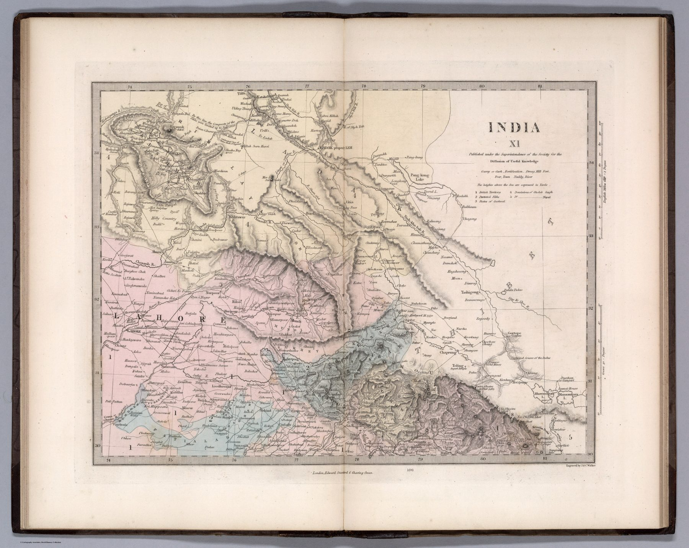

← Administered Empire and Victorian Atlas

The revised sheet
John Walker revised the Society for the Diffusion of Useful Knowledge’s Indian atlas, with J. & C. Walker engraving the maps and Edward Stanford issuing the 1856 volume. As with the Bombay sheet, 1856 dates the revised atlas rather than the underlying plate.
The north-west in uniform format
The sheet brings Punjab, Lahore and Ladakh into a uniform regional format, with boundaries, routes, settlements and hachured relief. A recently transformed political frontier is presented without drama as ordinary reference geography.
Education after expansion
The Punjab had been annexed in 1849. The map need not have been created as a direct response to annexation to reveal the larger process: territorial change is rapidly absorbed into revised atlases, classifications and schoolroom knowledge.
The gaze
Seven years separate the annexation of the Punjab from this plate, and the plate shows how little time a conquest needed to become a lesson. Sheet XI treats Lahore and Ladakh in the same conventions as Bombay on sheet III, with no change of register for territory annexed within the previous decade. The Walkers engraved both, and the engraving is the same.